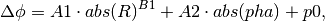
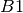
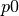
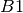
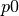

CRTomo Test Suite¶
Die CRTomo Test Suite ist ein Programm um die Funktionalität von CRTomo zu testen. Die Testszenarien, die weiter unten dargestellt sind, werden jeweils mit permutierten Konfigurationseinstellungen der crtomo.cfg invertiert.
Aufbau des Programmes¶
bin/crt_test enthält ausführbare Dateien. lib/crt_test besteht aus allen nicht-ausführbaren Dateien, die die Skripte in bin/crt_test benötigen. Der Ordner docs/doc beinhaltet die Dokumentation des Programmes.
Funktion des Programmes¶
Beim Ausführen des Programmes wird ein Hauptordner Test erstellt, der aus einer Vielzahl an Unterordnern besteht. Diese Unterordner werden automatisch generiert und richten sich nach den Hauptthemen, die untersucht werden sollen. Jeder Unterordner besteht entweder aus einer weiteren Ebene oder aus mehreren automatisch generierten Tomodir-Ordnern (Ordner die eine invertierbare Struktur aufweisen). Diese Ordnerstrukturen werden mithilfe des Skripts init_sim.sh. Man merkt, dass die Größe des Ordners Test gewaltig werden kann. Nach der Generierung der Ordnerstrukur und der beinhalteten Dateien wird jeder Tomodir-Ordner invertiert und getestet.
Ziele¶
Im ersten Schritt soll nur das Durchlaufen von CRTomo bei verschiedenen Ausgangsbedingungen getestet werden. Hierdurch sollen Schwachstellen in der Kombination der Parameter ersichtlich werden. Das Programm sollte so verständlich sein, sodass auch ein Laie verstehen würde wie sich CRTomo mit verschiedenen Parameter-Einstellungen verhält.
crtomo.cfg Beispieldatei:
*****
../grid/elem.dat
../grid/elec.dat
../mod/volt.dat
../inv
F
***PARAMETERS***
0 ! # cells in x-direction
0 ! # cells in z-direction
1.0000 ! smoothing parameter in x-direction
1.0000 ! smoothing parameter in z-direction
50 ! max. # inversion iterations
F ! DC inversion ?
F ! robust inversion ?
F ! final phase improvement ?
10 ! rel. resistance error level (%) (parameter A1 in err(R) = A1*abs(R) + A2)
0 ! min. abs. resistance error (ohm) (parameter A2 in err(R) = A1*abs(R) + A2)
0 ! phase error model parameter A1 (mrad/ohm^B) (in err(pha) = A1*abs(R)**B + A2*abs(pha) + A3)
0 ! phase error model parameter B (-) (in err(pha) = A1*abs(R)**B + A2*abs(pha) + A3)
0 ! phase error model parameter A2 (%) (in err(pha) = A1*abs(R)**B + A2*abs(pha) + A3)
.1 ! phase error model parameter A3 (mrad) (in err(pha) = A1*abs(R)**B + A2*abs(pha) + A3)
T ! homogeneous background resistivity ?
1.00 ! background magnitude (ohm*m)
-1.000 ! background phase (mrad)
F ! another dataset ?
1 ! 2D (=0) or 2.5D (=1)
F ! fictitious sink ?
280 ! fictitious sink node number
F ! boundary values ?
boundary.dat
Testszenarien¶
Reguläre vs. Irreguläre Gitter¶
Durch diesen Test wird gewährleistet, dass CRTomo sowohl reguläre (rechteckige Zellen) als auch irreguläre Gitter (z.B. dreickige Zellen) problemlos invertieren kann. Könnte gut als erste Ebene in den Ordner Test passen:
Test des Fehlermodells (Magnitude)¶
Hierbei werden verschiedene relative und absolute Fehler miteinander kombiniert und invertiert. Der Magnitudenfehler wird folgendermaßen berechnet:

wobei  den relativen Fehler in % und
den relativen Fehler in % und  den absoluten Fehler in
den absoluten Fehler in  darstellt. Ein kleiner Fehler in stabilisiert das Ergebnis. Gute Kombination von
darstellt. Ein kleiner Fehler in stabilisiert das Ergebnis. Gute Kombination von  resultieren aus
resultieren aus  und
und  .
.
Test des Fehlermodells (Phase)¶
Hierbei werden verschiedene Fehler mit einander kombiniert und invertiert. Der Phasenfehler wird nach Flores (2010) folgendermaßen berechnet:

wobei  den relativen Magnitudenfehler,  einen beliebigen Exponenten, den relativen Phasenfehler und  den absoluten Phasenfehler darstellt
den relativen Magnitudenfehler,  einen beliebigen Exponenten, den relativen Phasenfehler und  den absoluten Phasenfehler darstellt
TODO
Vergleiche Fehlermodell mit individuellem Fehlermodell¶
Es ist möglich ein indiviuelles Fehlermodell über die Datei crt.noisemod zu erzeugen. Der Vergleich beider Fehlermodelle jeweils für Magnitude und Phase zeigt, ob es sich lohnt ein individuelles Fehlermodell zu generieren.
crt.noisemod Beispieldatei:
1 # Ensemble seed
30.0 # Relative error resistance A (noise) [%] von dR=AR+B
0.100E-03 # Absolute error resistance B (noise) [Ohm m]
0.00 # Phase error parameter A1 (noise) [mRad/Ohm/m] von dp=A1*R^B1+A2*p+p0
0.00 # Phase error parameter B1 (noise) []
0.00 # Relative phase error A2 (noise) [%]
0.500 # Absolute phase error p0 (noise) [mRad]
Modellvergleich¶
Es werden verschiedene Modelle erzeugt und getestet. Es soll bestimmt werden, wie die Inversion auf zwei Modelle mit derselben Struktur aber mit inversen Widerständen/Phasen reagiert.
Randbedingungen¶
Es könnten verschiedene Randbedingungen, wie Gemischte- und Neumann-Randbedingungen getestet werden.
Normale/ optimistische/ pessimistische Inversion¶
Zur Vereinfachung können direkt diese drei Standard-Schemata invertiert werden:
normal:
* 5 % Magnitude error + 1e-4 Ohm * 2 mrad phase error * robust inversion * no homogeneous starting model for FPI
optimistisch:
* 5 % Magnitude error + 1e-4 Ohm * 1 mrad phase error * non-robust inversion * no homogeneous starting model for FPI
pessimistisch:
* 10 % Magnitude error + 1e-4 Ohm * 4 mrad phase error * robust inversion * no homogeneous starting model for FPI
Module¶
Nachfolgend werden alle benutzen Module des Ordners crt_test aufgelistet und beschrieben.
lib¶
Testkriterien¶
Läuft die Inversion durch?¶
- error.dat vorhanden? (Vor Inversion löschen!)
- inv.ctr letzte Zeile ‘Finished’?
Qualitätstest¶
TODO Nur RMS Test? Vielleicht auch MRMS?
Anzahl an Iterationen¶
- inv.ctr